Distinct by design.
The first collection of each season, shown in monochrome with identical ticket data. Color is removed only for this comparison. View collection variations.
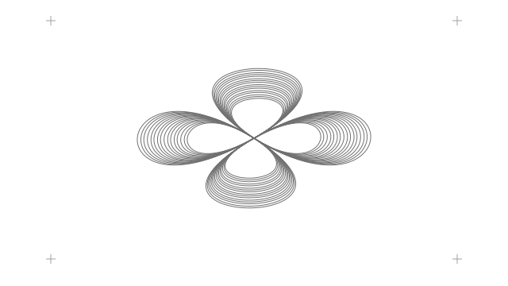
Ember bloom
Crimson & Blood Orange
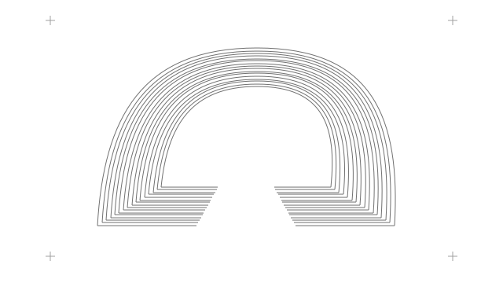
Terracotta arcade
Burnt Sienna & Terracotta
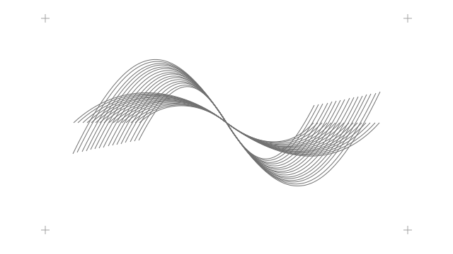
Dune current
Desert Sand & Warm Amber
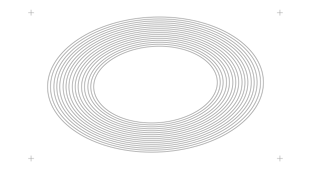
Solar halo
Solar Yellow & Pastel Gold
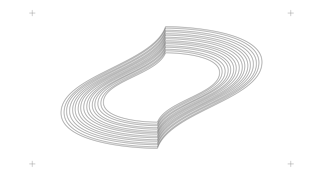
Olive spindle
Olive & Dried Moss
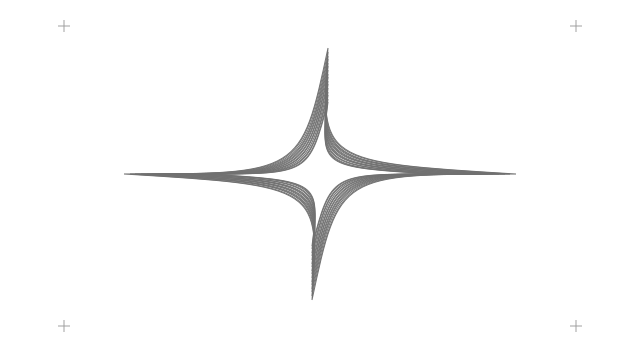
Chartreuse pulse
Vivid Lime & Chartreuse
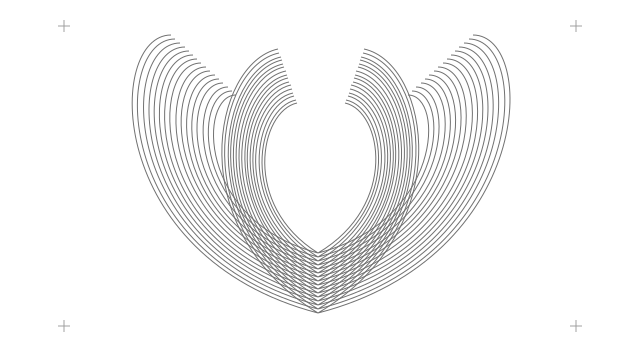
Meadow fan
Spring Foliage & Meadow
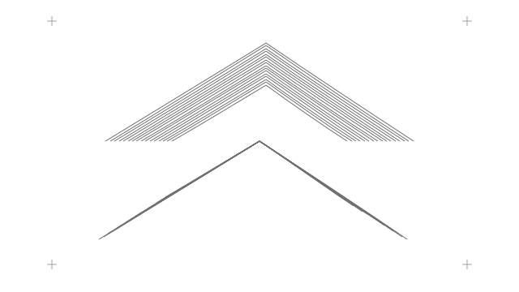
Pine chevrons
Deep Forest & Pine
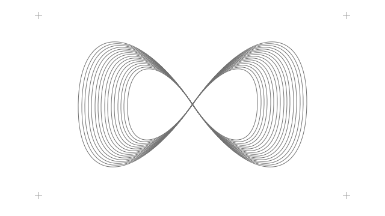
Jade knot
Spearmint & Crisp Jade
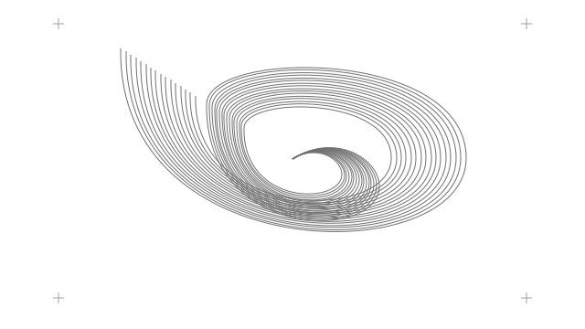
Tidal gyre
Abyssal Waters & Dark Teal
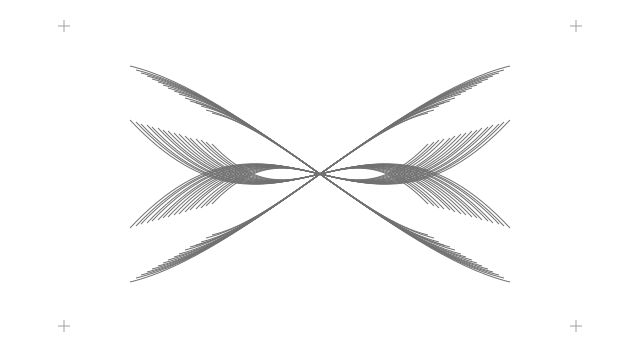
Cyan interference
Electric Cyan & Turquoise
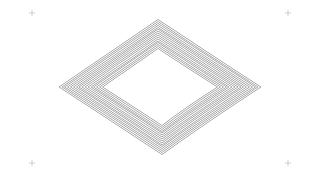
Glacier facets
Glacier & Pure Aquamarine
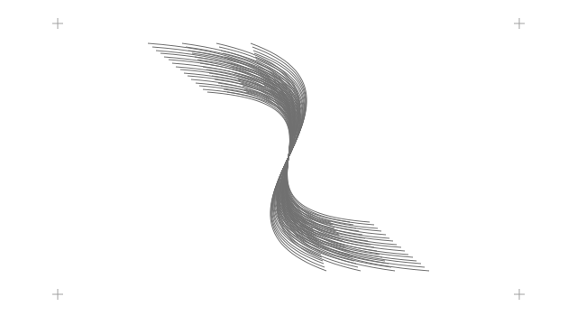
Sky ribbons
Cerulean & Sky Blue
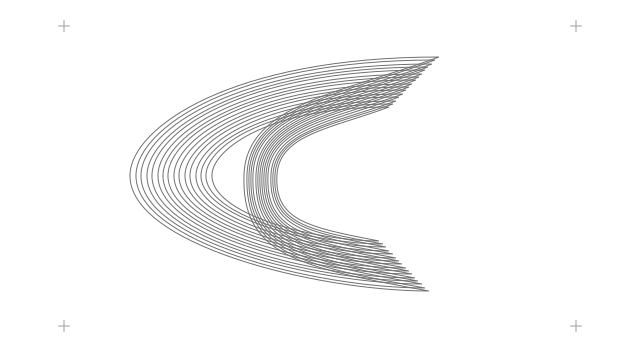
Cobalt crescent
Cobalt & Deep Azure
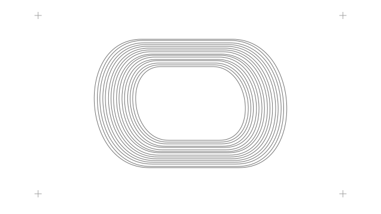
Midnight vault
Midnight Navy & Steel
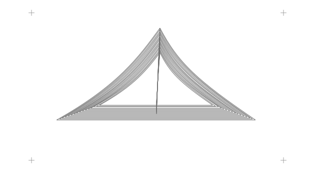
Violet triad
Royal Violet & Indigo
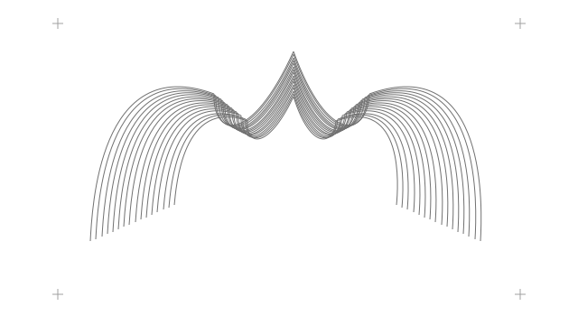
Amethyst crown
Imperial Amethyst & Plum
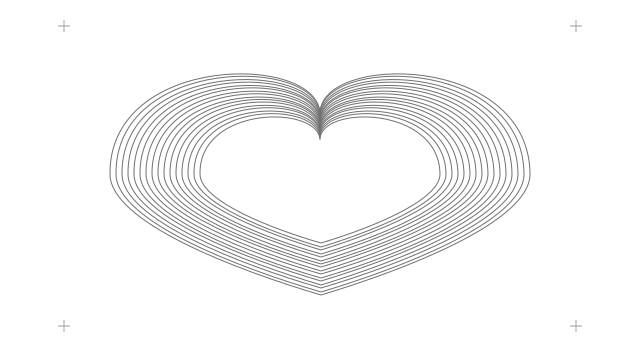
Orchid heart
Orchid & Wild Berry
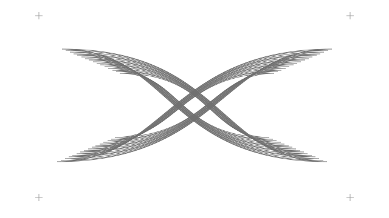
Fuchsia butterfly
Vivid Fuchsia & Magenta
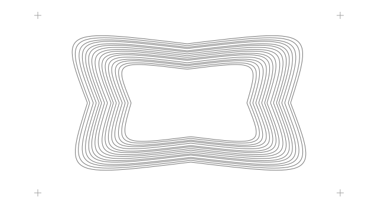
Coral scallop
Bubblegum & Pastel Coral
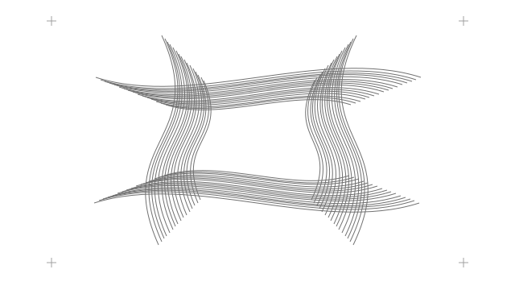
Blush weave
Warm Neutral & Blush Tints
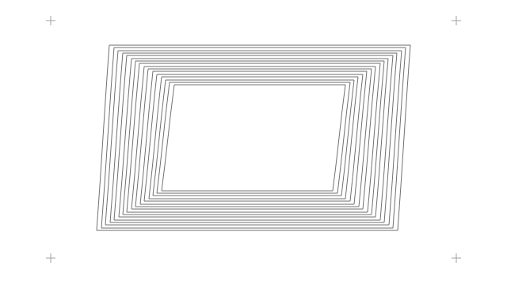
Zenith lattice
The Monochromatic Zenith